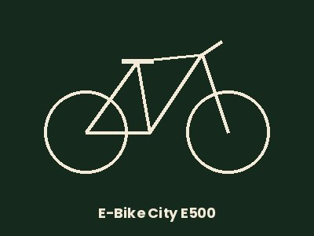

Consejos para hacer la ruta
- Lleva agua: casi no hay sombra en la parte alta.
- En verano, mejor a primera hora de la mañana.
- Si vas en bici, casco siempre y cuidado en las bajadas de tierra.
- Respeta los cultivos y no salgas del camino.
Rutas por Paracuellos
Una ruta corta y señalizada para conocer los alrededores de Paracuellos de Jarama, con vistas a la vega del río Jarama. Se puede hacer a pie o en bici de montaña.
La ruta mide unos 5,5 km y sale del casco urbano. Pasa por la zona de El Lavadero y sube hacia Las Guindaleras, desde donde se ve toda la vega del Jarama. Está marcada con las señales blancas y amarillas de los senderos de pequeño recorrido (PR).
| Tramo | Distancia | A pie | En bici |
|---|---|---|---|
| Pueblo – El Lavadero | 1,5 km | 20 min | 7 min |
| El Lavadero – Las Guindaleras | 2 km | 30 min | 12 min |
| Las Guindaleras – Pueblo | 2 km | 25 min | 10 min |
| Total | 5,5 km | 1 h 15 min | 29 min |
Si quieres hacer la ruta en bici, puedes alquilar una bici en BiciRuta. Para esta ruta te recomendamos la urbana si vas tranquilo, o la eléctrica si no quieres sufrir en las subidas.
